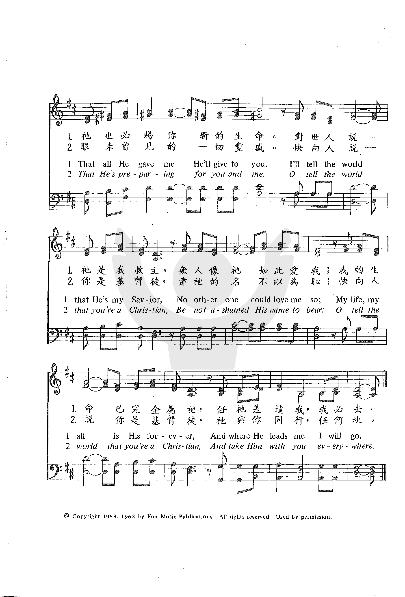

|
|
|
|
Verse 1 I'll tell the world that I'm a Christian Verse 2 I'll tell the world that He is coming
|
我願傳講我是基督徒，靠他的名不以為恥； |
|
https://www.zanmeishige.com/tab/26037.html?songbook=1&index=462
 |
|
|
|
|

1089
Ill Tell The World That Im A Christian 我愿传讲我是基督徒
| Text: | I'll Tell the World That I'm a Christian |
| Author: | Baynard L. Fox |
| Tune: | TUCKER (Fox) |
| Composer: | Baynard L. Fox |
| Short Name: | Baynard L. Fox |
| Full Name: | Fox, Baynard L, 1932-1982 |
| Birth Year: | 1932 |
| Death Year: | 1982 |
Tune Information
| Title: | TUCKER (Fox) |
| Composer: | Baynard L. Fox |
| Meter: | Irregular |
| Incipit: | 55353 45315 53466 |
| Key: | D Major |
| Copyright: | © 1958, 1963, 1973 by Fox Music Publications |